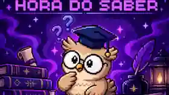

Matéria por matéria
A jornada é dividida em etapas. Em cada matéria, o jogador passa por várias perguntas antes de chegar ao resultado daquela área.
Responda perguntas de diferentes matérias, descubra sua pontuação ao final de cada etapa e avance para o próximo desafio sempre acompanhado pela Owli.

A jornada é dividida em etapas. Em cada matéria, o jogador passa por várias perguntas antes de chegar ao resultado daquela área.
Quando uma matéria termina, o jogo mostra a pontuação obtida naquela etapa antes de liberar a próxima.
Depois do resultado, a aventura continua com uma nova matéria, mantendo a sequência até completar os desafios.
Uma nova matéria apresenta sua sequência de perguntas.
Avance questão por questão enquanto Owli acompanha a jornada.
No fim da matéria, o desempenho daquela etapa é revelado.
O próximo conteúdo entra em cena e a sequência recomeça.
Owli é a coruja que acompanha o jogador durante todo o Hora do Saber. Ela funciona como a presença constante da aventura: enquanto as matérias e perguntas mudam, Owli continua ao seu lado.
Uma mascote feita para representar curiosidade, estudo e descoberta.
A pontuação não aparece só no final de tudo. Cada etapa fecha com seu próprio desempenho antes do jogador seguir em frente.
Também dá para abrir o projeto diretamente no Scratch.
Abrir projeto original ↗